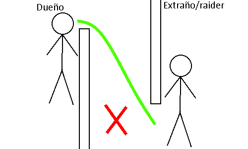
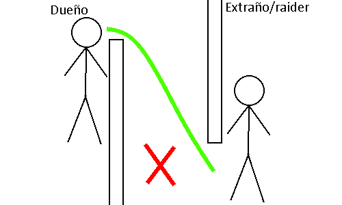
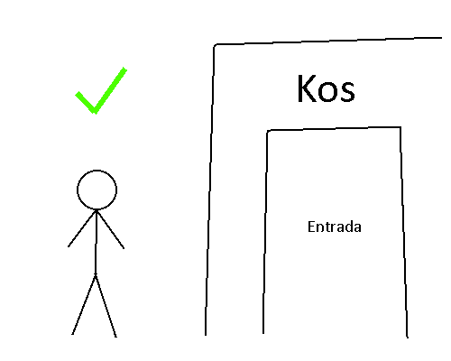
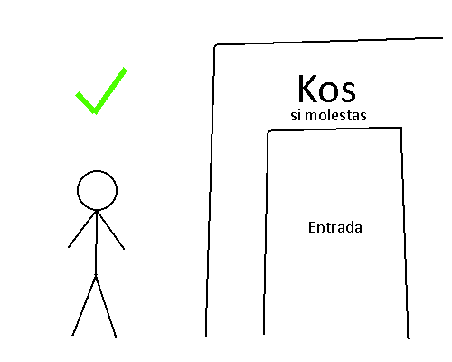
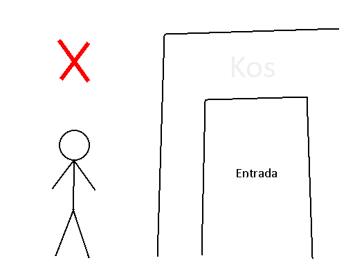
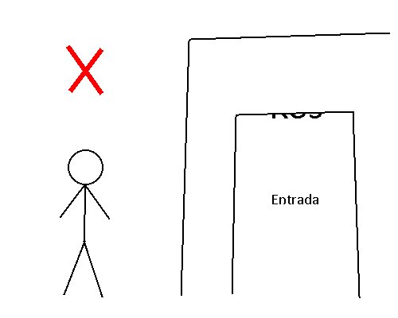
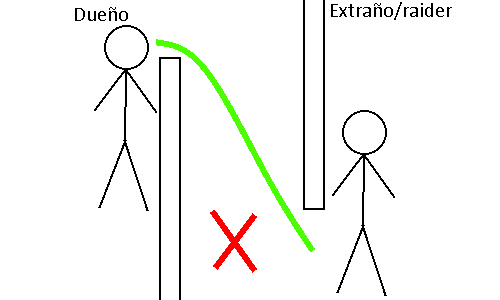

Bases que estan BIEN:

Bases que estan MAL:

 



Matarte de cualquier forma sin justificación alguna esto incluye pero no limitado a:
- Puños
- Caida Forzada o PropKill.
Significa que una vez que hayas muerto tendrás que olvidar tu vida pasada.
Puedes recordar a tus compañeros de equipo/trabajo/amigos, tu lugar de trabajo, las cosas que tenías y que estabas haciendo antes de morir.
Debes olvidar quíen te ataco, esto se incluye si alguien más te lo dice, no puedes matar ni atacar a tu homicida ni por accidente durante un periodo de tiempo, no puedes mandar a atacar a dicha persona, NI SIQUIERA POR SICARIO, ya que será considerado como romper esta regla.
Significa que no puedes usar cosas o caracteristicas que no esten dentro del juego para sacar ventaja, unos ejemplos son:
- Utilizar la lista de jugadores para ver el job de los demas.
- Ver que el sicario tiene un Hit activo.
Significa que no puedes intentar matar a alguien que este en el spawn o matar a alguien desde el spawn.
Devolverte al spawn seria romper FailRP.
No puedes subir a lugares que no estan diseñados para que estes ahi, algunos ejemplos son:
Estas imagenes son de referencia, no son para que lo tomen literal
Significa que nadie puede bloquear el paso público con props, esto puede variar dependiendo el caso, ya que un caso flexible puede ser el de un vendedor bloquea su tienda para remodelar o irse AFK (away from keyboard) por un periodo de tiempo corto, asi que hay poner atención a quien pone los props y por cuanto tiempo.
El FailRP se refiere a romper tu rol para tu beneficio o para el daño de otros, que no actuaces de acuerdo a tu trabajo, ejemplos:
- Como perro andes con una metralleta o un arma por el estilo, ya que no sería lógico.
- Otra instancia sería que como sicario, matas a una persona y cumples tu rol matandolo, pero ves que hay buenas cosas y le pasas el dato a unos ladrones, esto va fuera de el trabajo como sicario.
- Cuando roben tu auto, utilizar la physgun para evitar que te lo roben, si en la vida real alguien robara tu auto, podriamos utilizar la physgun para evitar eso, pero en este caso no.
El FearRP se refiere al miedo dentro del Rol, por ejemplo:
- Un Criminal te intenta asaltar y como Ciudadano, tu personaje tiene miedo.
- Como policia intentas arrestar a alguien pero aparecen 3 Criminales y estas en una posicion comprometedora, no importa como lo veas, si haces algo mal te mataran.
KOS se refiere a Kill On Sight (Matar a primera vista), significa que al entrar, el dueño del KOS o los dueños tienen derecho a matarte sin previo aviso, tambien pueden colocar terminos para KOS.
Algunos ejemplos son:
Zonas KOS que estan BIEN:
 Zonas KOS que estan MAL:
 Estas imagenes son de referencia, no son para que lo tomen literal
El VDM (Vehicle DeathMatch) es el matar a una persona de forma aleatoria sin justificación por medio de vehiculos, el VDM es el derivado del RDM.
Bases que estan BIEN:
Bases que estan MAL:
